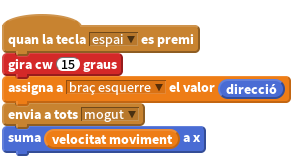
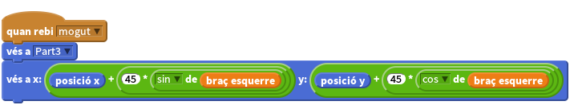

Llista de tasques
Un braç articulat està fet de dos objectes. Pot ser bastant difícil de construir ja que cadascun dels dos objectes que formen el braç necessita saber on és l’altre objecte en tot moment, per tal de no separar-se’n i tenir un aspecte estrany.
Això es fa utilitzant un càlcul matemàtic anomenat trigonometria, que s’utilitza molt sovint en la producció de videojocs, robots i altres noves tecnologies. El nostre primer objecte serà la part superior del braç, aquest no és complicat ja que només cal que giri a l’espatlla i es mogui conjuntament amb la resta de les parts del cos. Una cosa que haurem d’establir serà la direcció del nostre braç mitjançant una variable (ho farem més endavant).

El següent càlcul s’utilitza per controlar la part inferior del braç. Aquí és on utilitzarem la trigonometria per calcular on s’hauria de col·locar la part inferior del braç (potser necessitaràs demanar ajuda per fer aquest pas).

Primer de tot, el nostre braç s’actualitzarà quan s’utilitzi l’envia a tots mogut. Pots utilitzar qualsevol missatge a envia a tots sempre i quan la part superior del braç estigui enviant el mateix missatge.
Llavors, la part inferior del braç es situarà per ella mateixa al punt centre de la part superior del braç, on aquest s’ajunta amb l’espatlla.
A continuació, volem col·locar el colze del braç inferior fins a l’altre extrem de la part superior del braç. Imagineu que, com que la part superior del braç gira al voltant de l’espatlla es dibuixa un cercle, en primer lloc: ¿quina és el radi d’aquest cercle? Bé, la longitud del nostre braç en aquest exemple és d’aproximadament 45 píxels de llarg.
Finalment, voldrem esbrinar en quin punt al voltant d’aquest cercle es troba l’altre extrem del nostre braç, i posicionar el nostre braç inferior allà. Per fer això utilitzem la trigonometria i així canviar la posició del nostre braç inferior i crear un colze.